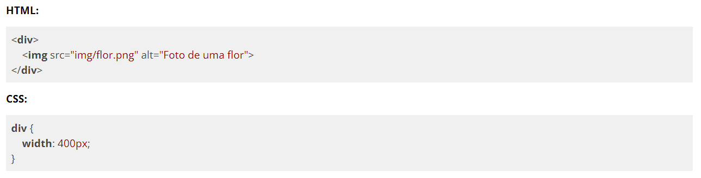
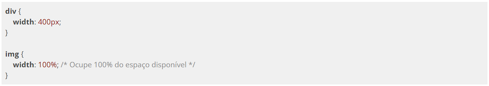
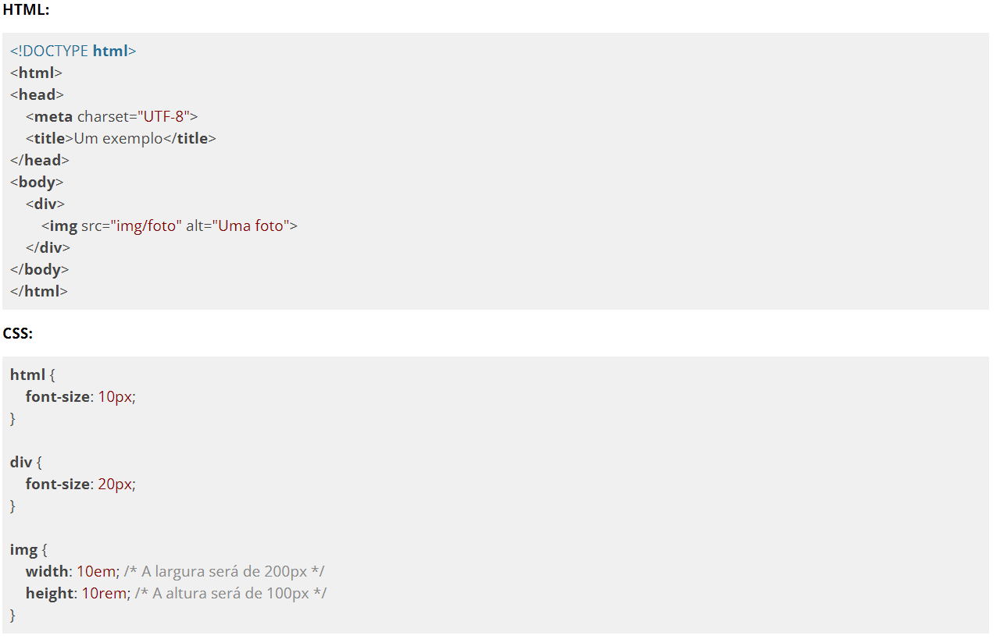

Já vimos em exercícios passados o uso da unidade de medida relativa com %. Usamos essa medida relativa quando queremos que um elemento use, por exemplo, 100% do espaço disponível.

No exemplo acima, dependendo do tamanho da imagem, a imagem pode ultrapassar o espaço que definimos para a <div> ou pode ocupar um espaço menor. Se queremos que a imagem ocupe todo o espaço da <div> podemos usar a unidade relativa %:

A grande vantagem de se usar % é que não importa o tamanho que colocamos na <div>, a <img> sempre vai acompanhar o tamanho da sua tag mãe (a <div>).
EM e REM tem o mesmo conceito de % mas ao invés de serem baseadas no tamanho de um elemento, essas medidas são baseadas em tamanho de fonte. EM usa o tamanho da fonte do elemento pai e REM usa o tamanho da fonte do <html>.

A vantagem de usar essas medidas é que se tivermos outros elementos usando essas medidas e precisarmos mudar o tamanho de todos os elementos proporcionalmente, basta mudarmos em um lugar só. Estas unidades de medida são ideais para quando o site precisa ser exibido em diferentes tamanhos de telas, onde em cada tamanho de tela a fonte deve ser exibida em escalas de tamanhos diferentes e proporcionais entre si.